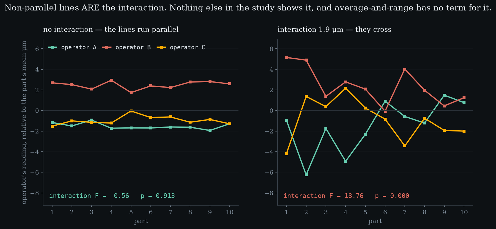
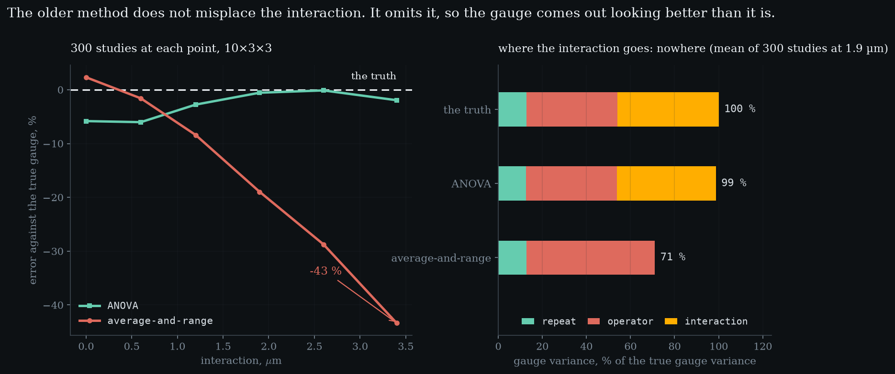

Level 3 · chapter three
Gage R&R by ANOVA
Level 2 assumed each operator's offset is the same on every part. Break that assumption and there is a fourth term — and the older arithmetic has no room for it. It does not misplace the interaction; it omits it, so the gauge comes out looking better than it is.
after Level 2 — repeatability and reproducibility·leads to Level 4 — %GRR, ndc, and against what
- 3.1One study, two arithmeticsranges and a table, or sums of squares and nothing looked up
- 3.2The term that only one of them hasnon-parallel lines are the interaction, and it needs replication
- 3.3Four terms, and no remainder
- 3.4It does not misplace the interactionit omits it, so the gauge comes out looking better than it is
- 3.5Three hundred studies, because one settles nothing43 % too small at the far end, and ANOVA's own bias named
One study, two arithmetics
10 parts, 3 operators, 3 trials each: sixty numbers. the constant, earnedAverage-and-range needs , which is 1.6935 for three readings. Simulated here, then checked against the printed table at five subgroup sizes before anything rests on it.Average-and-range reduces them with ranges and a table of constants. ANOVA reduces them with sums of squares and nothing looked up.
On a well-behaved study they land close together, and that is the honest starting point rather than a concession. no interaction presentANOVA2.39 µmaverage-and-range2.58 µmgap on this one study7.7 %The older method is not wrong and it is far easier by hand, which is exactly why it outlived the arithmetic that replaced it.
The term that only one of them has
Level 2 assumed something without saying so: that each operator's offset is the same on every part. Operator A reads low, and reads low by the same amount on part one and part ten.
Suppose A reads low on the small parts and high on the large ones. what it is notNot extra repeatability. It is perfectly reproducible: measure that part again and the same operator makes the same error.That is a real and common failure - a fixture that locates some geometries badly, an operator who interpolates a scale differently near the ends - and it has a name: the part-by-operator interaction.

Non-parallel lines are the interaction. the interaction testclean studyF 0.56, p 0.913with an interactionF 18.76, p < 0.001pool belowp > 0.25Nothing else in the study shows it, and it is a difference of differences - which is why it needs every operator to see every part, and more than one trial. With a single trial the interaction and the repeat error occupy the same cells and it is not merely imprecise, it is unidentifiable.
Four terms, and no remainder
What ANOVA gives you that a table of constants cannot is an identity. The total variation in all sixty numbers splits into exactly four pieces.
And nothing is left over - not approximately. the total, splitparts63.6 %operators13.7 %interaction19.2 %repeat3.4 %On the study with an interaction the remainder is 2.3e-13, which is floating-point zero. That is what makes this a decomposition rather than a convention, and it is the statement average-and-range has no way to make.
The variance components come from inverting the expected mean squares, which means a component is a difference of two mean squares - so it can come out negative, exactly as Level 2's reproducibility could. the check that mattersFeeding the components back must reproduce the mean squares to floating point. A percentage test cannot catch a mis-inversion; that algebraic one catches three different ones.Three places can hit that boundary here instead of one.
It does not misplace the interaction
So where does the interaction go in the older arithmetic? The tempting answer is that it gets folded into repeatability and makes the gauge look noisier than it is. That is wrong, and the truth is worse.
Repeatability comes from ranges taken inside a part-operator cell. mechanicallyChange the interaction from zero to four microns and the repeatability estimate does not move at all. A test asserts exactly that.The interaction is constant inside that cell, so the range is blind to it. Reproducibility comes from the spread of the operator averages, and the interaction averages away across the parts. There is nowhere for it to enter.
It is omitted. a gauge that looks better than it isthe true gauge2.80 µminteraction share of it57 %average-and-range says2.52 µmSo the gauge comes out smaller than it is - the method flatters the instrument, and nobody reading the report has any way to tell.
- the true gauge µm
- —
- ANOVA µm
- —
- average-and-range µm
- —
- omitted by X̄–R %
- —
At zero interaction the lines are parallel and both methods sit on the truth. Turn it up: the lines start crossing, the true gauge climbs, ANOVA climbs with it, and average-and-range does not move at all. The last tile is how much of the real gauge it is failing to report — and past thirty percent that is the difference between a gauge you would accept and one you would not.
Three hundred studies, because one settles nothing
On the single seeded study above, ANOVA reports 3.35 µm against a truth of 2.80 - it overshoots by more than average-and-range undershoots. kept on purposeA test asserts the seeded study reverses the ranking. Reseeding until it agreed with the conclusion would be the dishonest fix.One study does not settle which method is better, and this is the fourth time this curriculum has had to say so.

Averaged over three hundred studies at each interaction strength the picture is unambiguous, and it is a picture about direction rather than about size. X̄–R error against the truthinteraction 0.0 µm+2 %interaction 0.6 µm-2 %interaction 1.2 µm-8 %interaction 1.9 µm-19 %interaction 2.6 µm-29 %interaction 3.4 µm-43 %ANOVA moves 3.9 % across the whole sweep; average-and-range moves 45.7 %, all of it downward.
ANOVA is not unbiased either, and saying so matters. and the conventionAIAG pools the interaction into repeatability when p > 0.25. Pooling a real one understates the gauge by 9.3 % on this study - a decision with a price, not a tidy-up.With no interaction at all it sits -5.8 % low, because an operator component estimated on two degrees of freedom and then square-rooted comes out short. It is not systematically wrong as the interaction grows, which is a weaker and more defensible claim than being right.
Which brings the question this has been building towards. the seam ahead%GRR against study variation, or against tolerance. Same gauge, two verdicts.There are four variances now, and a verdict is not a variance. A verdict is a percentage, and a percentage needs a denominator. Choosing it is not arithmetic - it is a decision about what the gauge is for, and the two usual choices disagree with each other on purpose.